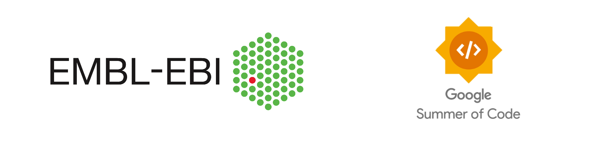

GSoC - 2023 : Wrapped

After the results for Google Summer of Code(GSoC) - 2023 were released, my mentors Martin Beracochea and Sandy Rogers remained in close contact with me during the community bonding period. Subsequently, the coding period unfolded, which I’ve structured into 3 phases to align with the 3 projects I undertook as part of my contributions.
My contribution at EMBL - EBI for GSoC majorly involved creating visualizations that would help in comparative metagenomics. Additionally, I used Vega-Lite which introduced an approach that would allow a common grammar for creating visualisations. This was done to enhance code reusability in both React and Jupyter Notebooks, regardless of programming language.
Phase 1 30th May - 30th Jun
Delved into relevant research papers, understood the intricacies of assembly runs, samples, studies and analyses, which form the foundational concepts of MGnify.
Documented all visualizations present on the MGnify website which was extensively used in Phase 2.
Significant chunk of Phase 1 was spent contributing and collaborating with Alejandra Escobar (MGnify Bioinformatician) on the enhancement of her Jupyter notebook - Drawing presence/absence KOs for one metagenomic sample, specifically focusing on Pathways Visualization.
The objective was to streamline the notebook, making it more concise, interactive, self-explanatory, and immediately usable.
Technologies Involved : R + Docker + JupyterLab + Quarto + Packages like KEGGREST, Pathview
Pull Request :
Worked on an existing PR by Alejandra, Link : https://github.com/EBI-Metagenomics/notebooks/pull/26
Status : Under Review 🟡
Code in Action :
: : : : : : : : : : : : : : : : : :
Phase 2 1st Jul - 14th Aug
- The second phase deals with exploring and building visualizations for the MGnify website.
Phase 2A 1st Jul - 16th Jul
This phase focused on finding visualization solutions that could work seamlessly in both JavaScript and Python environments.
Involved testing of packages like Plotly and Highcharts were tested, with a preference for Highcharts due to its usage in the MGnify site.
But then Highchart posed an issue as it couldn’t reference data as a link, impacting interoperability between React and Jupyter, especially with large datasets.
Then came the idea of a common visualization grammar, enabling easy porting of visualizations to Jupyter notebooks for users to perform deeper visualization and push in custom data as well.
Alternatives like pandas-js, Danfo.js, and Vega-Lite were considered.
In the end, the Vega ecosystem was selected due to its compatibility and ability to handle large datasets, ensuring seamless interoperability.
. . .
Phase 2B 17th Jul - 14th Aug
This phase focused on developing visualizations using the Vega framework.
Also, I had the privilege of meeting the EBI team, where I discussed my GSoC experience, shared progress updates, and conducted a live Vega-Lite demo to showcase its capabilities. (Slide Deck)
The Visualisations that have been successfully generated using Vega are :
| Name | Visualisation Type | Component used (File) |
|---|---|---|
| Number of Sequence Reads per QC step | Horizontal Bar Chart (uses tsx preprocessed data) | QCChart.tsx |
| Reads Length Histogram | Area Chart + Std Deviation band | QC-chart-components/VConcatTop.tsx |
| Reads GC Distribution | Area Chart + Std Deviation band | QC-chart-components/VConcatTop.tsx |
| Reads Length (Min, Avg, Max) | Horizontal Bar Chart | QC-chart-components/VConcatBottom.tsx |
| Reads GC-AT Content (%) | Horizontal Stacked Bar Chart | QC-chart-components/VConcatBottom.tsx |
| Nucleotide Position Histogram | Stacked Area Chart | NucleotidesHistogram.tsx |
| Interpro Sequence feature summary | Horizontal Bar Chart | InterproBar.tsx |
| GO Terms | Concatenated Horizontal Bar Chart | GOBar.tsx |
| Domain + Phylum Composition | Multi-Colour Bar Chart | TaxBar.tsx |
| Pfam | Vertical Bar Chart | VerticalBar.tsx |
| KO | Vertical Bar Chart | VerticalBar.tsx |
| KEGG Module categories | Vertical Bar Chart | VerticalBar.tsx |
| antiSMASH gene clusters | Vertical Bar Chart | VerticalBar.tsx |
| COG Analysis | Vertical Bar Chart | VerticalBar.tsx |
| KEGG Class Analysis | Vertical Bar Chart | VerticalBar.tsx |
| KEGG Module Analysis | Vertical Bar Chart | VerticalBar.tsx |
- One of my favorite charts that I created was the Nucleotide position Histogram (live example below):
Technologies Involved :
- Docker + React + Typescript + Vega-Lite + Package : react-vega
Pull Requests :
ebi-metagenomics-client : Components were created for charts mentioned above
Link : https://github.com/EBI-Metagenomics/ebi-metagenomics-client/pull/295
Status : Under Review 🟡
emgapi : Made a minor change in data format
Status : Under Review 🟡
: : : : : : : : : : : : : : : : : :
Phase 3 14th Aug
Under the guidance of Varsha Kale, I worked on a her idea centered around the Study Summary feature.
The major point to be taken note of is that I used Altair for this, a Python package for generating Vega-Lite visualizations.
Generated Bar Charts for GO-slim data and Tree Heatmap visualizations for the complete GO annotation data, using ontological web formats for gene ontologies, enabling in-depth analysis.
Technologies Involved : Python + JupyterLab + Packages like Altair, graphviz, Owlready2
Unexplored Horizons
Schema for Vega-Lite Visualizations
One of the best ideas was to create a common repo that would host the schema for Vega-Lite visualizations.
This schema could be utilized by both the frontend (React) and Jupyter Notebooks, facilitating deeper data analysis.
I believe this is the most important horizon to be explored with respect to Vega-Lite.
Vega-Lite Dashboard for Comparative Metagenomics
A Vega-Lite dashboard within MGnify constituting multiple interactive charts and input controls.
A dashboard of this kind would provide the users with an experience to delve deeply into Comparative Metagenomics, explore complex data with ease.
Pre-generated KRONA Charts
In addition to the above, the idea of pre-generating KRONA charts for Taxanomic Analysis under Study Analysis Summary.
These charts, once generated, could be integrated into Jupyter Notebooks, enabling a complete
Analysis Summary of a Study, considering the work done with respect to GO analyses carried out in Phase 3.